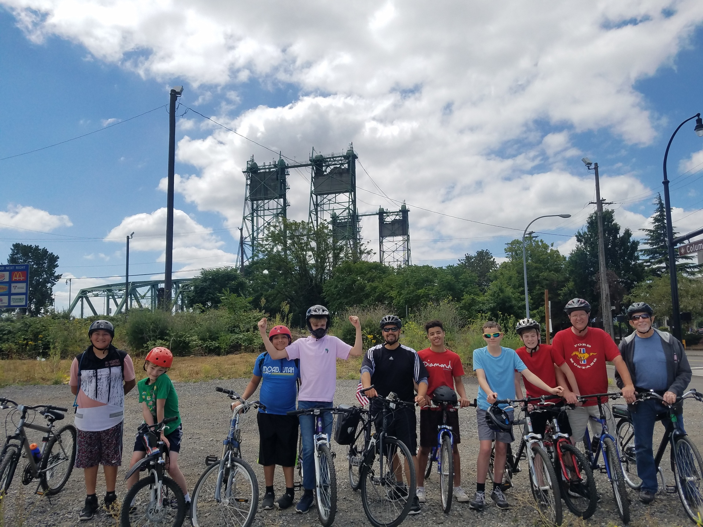
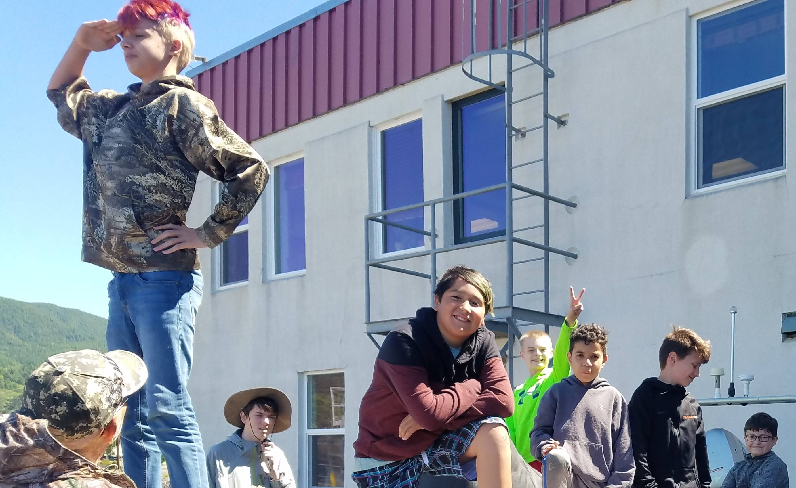

our mission
"To mentor young boys who do not have father figures in their life and encourage them to be their best."
History
Our director, Marty Sausville, has been mentoring for over thirty years in some form or another. In 1993, he started laying the ground work for what was to become Mentors of Boys. Marty came from a home with no father and wanted to give to boys who came from the same background. Fishing was a great passion of his and he began sharing this with boys from the community. Soon after he came across more boys and other men who took an interest in what he was doing. Fishing was just not enough for all of them, so they began other events such as campouts, hiking, bowling and more. In December 2000, a friend of Marty’s donated his time and money to get us our non-profit certifications. We have been growing ever since. In the years Mentors of Boys has been serving Vancouver, we have mentored over one hundred and ten boys.
The Boys
All of our boys come from different types of backgrounds, but all share one thing in common. This really does allow our boys to befriend each other a lot easier. Life long friendships are being made here. Most boys contact each other outside the program. Some of these boys have experienced neglect, abuse or have had a tragic event take place in their life. Other times they simply need a mentor to look up to and be proud of them. This is what Mentors of boys offers.
Eligibility
- Youth must not have active father figure in his life.
- Must be between the ages of eight and twelve.
- Need to be well behaved.
- Be able to get along with others without fighting.
- Must have a desire to be mentored.
- Have respect for Mentors, Jr. Mentors and other boys.
How We Mentor
The National Mentoring Partnership has deemed there to be five types of mentoring: Traditional (one to one), Group (more than one mentee), Team (more than one mentor), Peer (youth mentoring younger youth), Electronic (email and website). What is unique about Mentors of Boys is that we offer all five types of mentoring. Our primary form is group and team mentoring. Such events include monthly camp-outs, gym nights, sporting events and more. There are also smaller events which include a few boys and one or more mentors like fishing. This form of mentoring allows for relationships to be made on all levels, utilizes the few number of mentors we have and provides quality events at little per boys. One to one mentoring is a great tool and is used when boys need special attention that they cannot get with other boys around. Peer mentoring is from our Junior Mentor Program. Our Jr. mentors have a big responsibility in helping us mentor our boys. After all they are closer in age and can relate a lot more. Mostly they are there to lead by example and help when needed. Electronic mentoring is new to us and is still in the beginning phases. Already we can see the benefit from sending group emails out or have them view the bunkhouse of our website.
Junior Mentor Program
 In 2004, we started a
Junior Mentors Program for three reasons: to train future mentors, keep older boys
involved and to help our mentors in their efforts. It fulfilled all those objectives and more. Their
contribution to the M.O.B. as a whole was astounding. Now our J.M.s attend regular mentor meeting, give their
input as to how we should do things and help out on all events. In order to become a Junior Mentor a boys must
be in the M.O.B. for over four years and be at least fifteen years old. Now that does not automatically make
them a J.M. They need to be leaders, responsible, accountable and much more. Once inducted, there level in our
organization is now just below the mentors themselves.
In 2004, we started a
Junior Mentors Program for three reasons: to train future mentors, keep older boys
involved and to help our mentors in their efforts. It fulfilled all those objectives and more. Their
contribution to the M.O.B. as a whole was astounding. Now our J.M.s attend regular mentor meeting, give their
input as to how we should do things and help out on all events. In order to become a Junior Mentor a boys must
be in the M.O.B. for over four years and be at least fifteen years old. Now that does not automatically make
them a J.M. They need to be leaders, responsible, accountable and much more. Once inducted, there level in our
organization is now just below the mentors themselves.